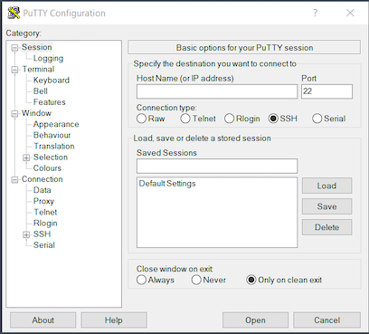

Accessing linux servers¶
If you have access to a remote Linux server this page covers how to connect to it remotely from your personal computer. Depending on the operating system (OS) and OS version of your personal computer, there are a few different ways of doing this. Note that this assumes that you are accessing your remote server directly and authenticating via password. If your institution or VPS provider uses intermediate authentication servers or key-based authentication, you should follow the instructions provided by them.
If you are attending the Theory and practice in metabarcoding for biodiversity workshop 7th - 13th January 2021, these instructions apply to you! The server IP address will be shared with you separately.
Connecting via SSH¶
We use SSH (Secure SHell) to send commands to the remote server and receive basic information in return, using the command line interface. When you log into a server for the first time it will ask you to reset your password. Once you have done so it will automatically log you out. You will then need to log back in using your new password.
Using terminal in MacOS or Linux¶
You can use the native terminal application available on any Mac or Linux machine. In Mac, if you haven’t used this before you can access it by using spotlight to search for “Terminal” or by navigating to the “Terminal” application using launchpad. On Linux starting a terminal using your GUI will vary depending on your distribution, but you can generally launch a terminal by pressing .
Once you have a terminal open, you then type an SSH command which looks like this:
ssh username@server_address
You will need to replace the username in the above command with your username for the server. You’ll also need to replace the server_address with the actual address of the server you are connecting to. If it is your first time connecting it will ask you if you trust the server, then will usually ask you for a password.
Using PuTTY in Windows¶
If you are running Windows you can use a program called PuTTY, an SSH client for windows. Once you have installed PuTTY, open it and type the server address in the field (see below screenshot). Then click . This will then bring up the login screen. Enter your credentials and click through any remaning prompts and it will give you access to the server.
Using Windows Subsystem for Linux¶
If you are running Windows 10, then an alternative to PuTTY is the Windows Subsystem for Linux (WSL), which allows you to effectively install a Linux operating system inside your Windows operating system. It is perhaps overkill to install a complete operating system simply to use SSH, but if you do decide to do this, once you have your Linux subsystem running you should follow the instructions above for using terminal in MacOS or Linux
Transferring files between local machine and server¶
There will be instances where you need to transfer files between your machine and a remote server. There are different ways to do this depending on your operating system and preferences.
Using the scp command in the terminal in Linux or MacOS¶
If you are running MacOS or Linux you can transfer files from local machine to server using the scp command in the terminal.
An example of using scp to transfer a file from your local machine to a server is below:
scp filename username@server_address:/path/
You type scp followed by the file name (if you are not in the directory the file is in you will need to write the whole file path) followed by your username@server_address followed by a colon then the path (from the root) to where you want the copy to go in the destination server. If you don’t know what the path is that you need to type in, remember, you can use pwd in the directory you want to send the file to and this will return the path of that directory.
To transfer from the server to your local machine you simply swap the order of your file paths i.e. server address and filepath then local file path.
Warning
The scp command is always given from your local machines terminal.
Using FTP software¶
FTP software comes with the advantage of having a GUI so you can drag and drop files rather than typing out commands.
WinSCP (Windows)¶
Windows users can use an application called WinSCP to transfer files.
Follow the below steps to set up WinSCP:
Change the file protocol drop down menu to SCP
Type the address of the server you want to connect to in the Host Name field
Enter your username and password for the server you want to connect to
Click login
Click through the remaining prompts
You can now drag and drop files between your local machine and the server
FileZilla (Windows, MacOS, Linux)¶
Follow the steps below (see screenshot if unsure where to enter information):
Open FileZilla
Enter the server address in Host field
Enter your username and password in the correct fields
Enter 22 in the Port field
Press quick connect
Click through remaining prompts
You can now drag and drop files between your local machine and the server